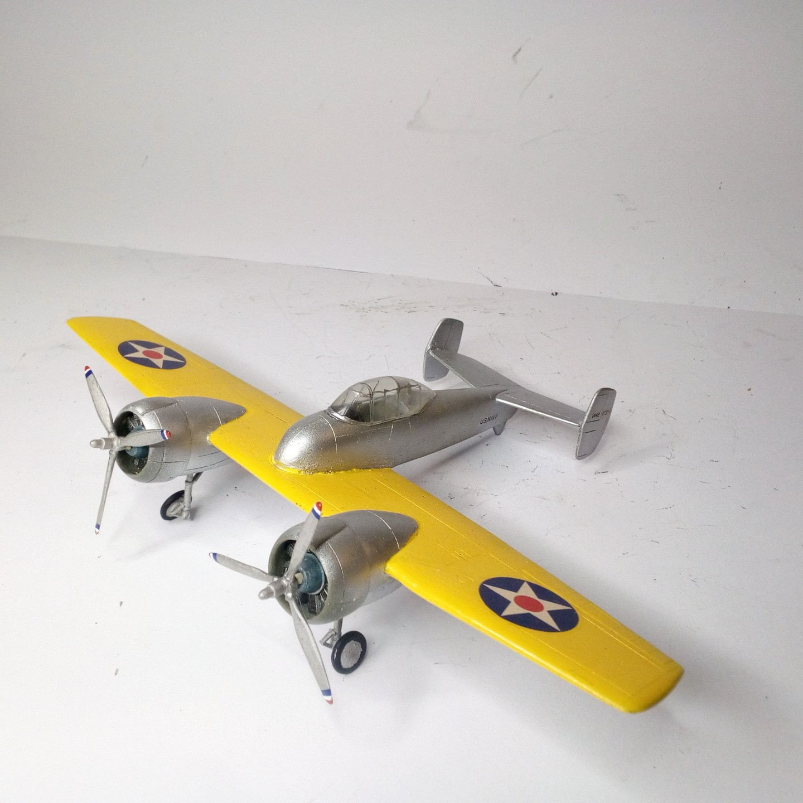
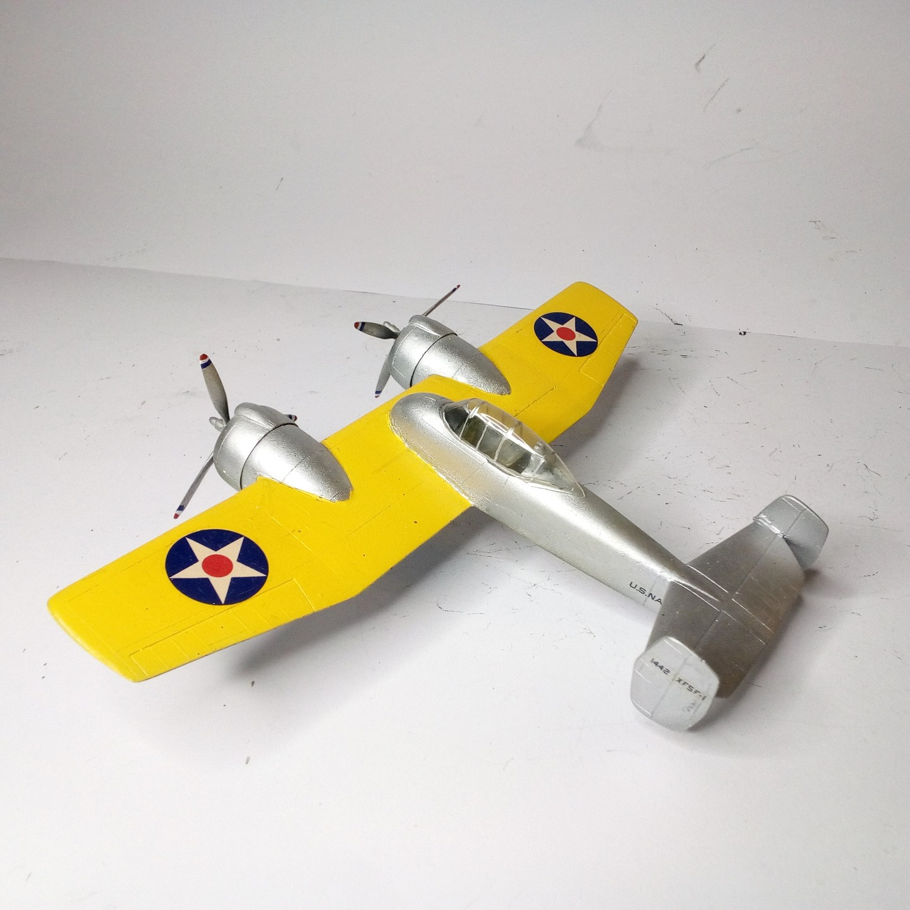

Aerei · scale model archive
Grumman XF5F-1 Skyrocket
Grumman XF5F-1 Skyrocket — Kit: VK Models resin kit, Scale: 1/72. Quite intriguing shape and rather advanced plane for its times #1/72 VK Models

Photo gallery

English description
Quite intriguing shape and rather advanced plane for its times
#1/72 VK Models
Descrizione italiana
Piuttosto intrigante forma e rather avanzato aereo per its times.
#1/72 VK Modellos.